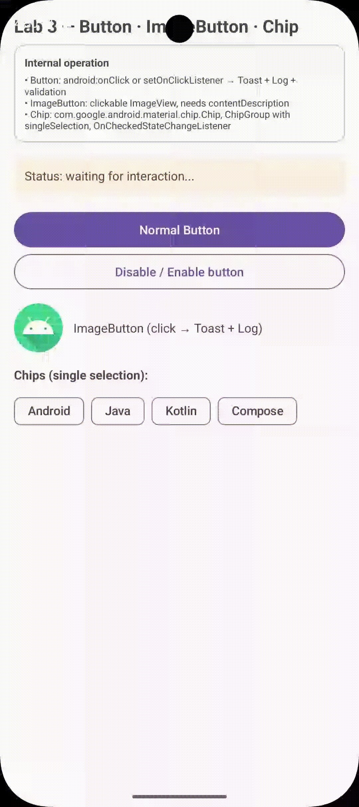
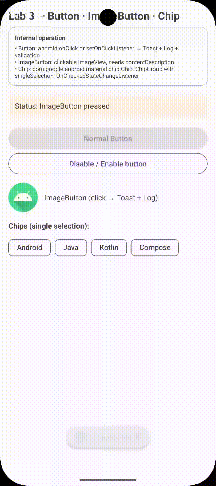

MaterialButton, ImageButton y ChipGroup
Explora los tres controles de acción esenciales: control de pulsaciones rápidas (Debounce), botones de imagen con accesibilidad (contentDescription para TalkBack) y selección única con ChipGroup.
1. Capturas del Emulador
Haz clic sobre cualquier captura para abrirla en zoom interactivo
Buttons & Toggle
lab-buttons-preview.gif

ChipGroup Selección
lab-buttons-chip.gif

2. Componentes y Controles de Acción
com.google.android.material.*| Componente / ID | Clase / Tipo | Propósito | Propiedad / Característica Clave |
|---|---|---|---|
| btnNormal | MaterialButton | Acción principal con protección de doble click | Patrón Debounce (500 ms) |
| btnDisabledDemo | MaterialButton (Outlined) | Alternar estado de habilitación de btnNormal | setEnabled(!enabled) |
| imgBtn | ImageButton | Botón de imagen accesible con efecto ripple | contentDescription + Ripple circular |
| chipGroup | ChipGroup (Filter Chips) | Filtro de selección exclusiva tipo RadioGroup | app:singleSelection="true" |
3. Código Fuente del Layout XML y Controladores
<?xml version="1.0" encoding="utf-8"?>
<ScrollView xmlns:android="http://schemas.android.com/apk/res/android"
xmlns:app="http://schemas.android.com/apk/res-auto"
android:layout_width="match_parent"
android:layout_height="match_parent">
<LinearLayout
android:layout_width="match_parent"
android:layout_height="wrap_content"
android:orientation="vertical"
android:padding="16dp">
<!-- Título Principal del Laboratorio -->
<TextView
android:layout_width="wrap_content"
android:layout_height="wrap_content"
android:text="@string/acbutt_title"
android:textSize="20sp"
android:textStyle="bold" />
<!-- Tarjeta Informativa de Operación -->
<com.google.android.material.card.MaterialCardView
android:layout_width="match_parent"
android:layout_height="wrap_content"
android:layout_marginTop="8dp"
app:strokeColor="@color/cardStroke"
app:strokeWidth="1dp"
app:cardElevation="0dp">
<LinearLayout
android:layout_width="match_parent"
android:layout_height="wrap_content"
android:orientation="vertical"
android:padding="12dp">
<TextView
android:layout_width="wrap_content"
android:layout_height="wrap_content"
android:text="@string/common_label_operation"
android:textStyle="bold"
android:textSize="12sp" />
<TextView
android:layout_width="wrap_content"
android:layout_height="wrap_content"
android:layout_marginTop="4dp"
android:text="@string/acbutt_info_desc"
android:textSize="11sp" />
</LinearLayout>
</com.google.android.material.card.MaterialCardView>
<!-- Preview de Estado de los Botones -->
<TextView
android:id="@+id/tvStatus"
android:layout_width="match_parent"
android:layout_height="wrap_content"
android:layout_marginTop="16dp"
android:background="#FFFFF3E0"
android:padding="12dp"
android:text="@string/acbutt_status_waiting" />
<!-- 1. MaterialButton Estándar (Debounce) -->
<com.google.android.material.button.MaterialButton
android:id="@+id/btnNormal"
android:layout_width="match_parent"
android:layout_height="wrap_content"
android:layout_marginTop="16dp"
android:text="@string/acbutt_btn_normal" />
<!-- 2. MaterialButton Outlined (Toggle Enabled) -->
<com.google.android.material.button.MaterialButton
android:id="@+id/btnDisabledDemo"
android:layout_width="match_parent"
android:layout_height="wrap_content"
android:text="@string/acbutt_btn_toggle"
style="@style/Widget.Material3.Button.OutlinedButton" />
<!-- 3. ImageButton Accesible con Ripple Circular -->
<LinearLayout
android:layout_width="match_parent"
android:layout_height="wrap_content"
android:layout_marginTop="12dp"
android:gravity="center_vertical"
android:orientation="horizontal">
<ImageButton
android:id="@+id/imgBtn"
android:layout_width="56dp"
android:layout_height="56dp"
android:background="?attr/selectableItemBackgroundBorderless"
android:contentDescription="@string/acbutt_image_desc"
android:src="@mipmap/ic_launcher_round"
android:scaleType="centerCrop" />
<TextView
android:layout_width="wrap_content"
android:layout_height="wrap_content"
android:layout_marginStart="12dp"
android:text="@string/acbutt_image_label" />
</LinearLayout>
<!-- 4. ChipGroup con SingleSelection -->
<TextView
android:layout_width="wrap_content"
android:layout_height="wrap_content"
android:layout_marginTop="16dp"
android:text="@string/acbutt_chips_label"
android:textStyle="bold" />
<com.google.android.material.chip.ChipGroup
android:id="@+id/chipGroup"
android:layout_width="match_parent"
android:layout_height="wrap_content"
android:layout_marginTop="8dp"
app:singleSelection="true"
app:selectionRequired="false">
<com.google.android.material.chip.Chip
android:id="@+id/chip1"
style="@style/Widget.Material3.Chip.Filter"
android:layout_width="wrap_content"
android:layout_height="wrap_content"
android:text="@string/acbutt_chip_android" />
<com.google.android.material.chip.Chip
android:id="@+id/chip2"
style="@style/Widget.Material3.Chip.Filter"
android:layout_width="wrap_content"
android:layout_height="wrap_content"
android:text="@string/acbutt_chip_java" />
<com.google.android.material.chip.Chip
android:id="@+id/chip3"
style="@style/Widget.Material3.Chip.Filter"
android:layout_width="wrap_content"
android:layout_height="wrap_content"
android:text="@string/acbutt_chip_kotlin" />
<com.google.android.material.chip.Chip
android:id="@+id/chip4"
style="@style/Widget.Material3.Chip.Filter"
android:layout_width="wrap_content"
android:layout_height="wrap_content"
android:text="@string/acbutt_chip_compose" />
</com.google.android.material.chip.ChipGroup>
</LinearLayout>
</ScrollView>4. Guía de Desarrollo Paso a Paso
- Crear el layout
res/layout/activity_buttons.xmlconMaterialButton,ImageButtonyChipGroup. - Implementar el patrón Debounce calculando la diferencia entre
System.currentTimeMillis()ylastClick(umbral de 500 ms). - Configurar el botón Outlined como interruptor que alterna
btnNormal.setEnabled(!isCurrentlyEnabled). - Añadir atributo
android:contentDescriptionalImageButtony fondo?attr/selectableItemBackgroundBorderlesspara el ripple circular. - Configurar
setOnCheckedStateChangeListeneren elChipGrouppara responder a selecciones de filtros.
5. ¿Qué es setOnClickListener y qué más puede hacer un Button?
Si estás trabajando Android Studio con Java/Kotlin, setOnClickListener es solo una de varias formas de manejar eventos. Todo botón es un View que emite eventos en el hilo principal (UI Thread) — registra un objeto que implementa View.OnClickListener con un único método onClick(View v). Gracias a SAM, en Java 8+/Kotlin puedes pasarlo como lambda v -> { } / { }. Te dejo el listado práctico, desde lo más básico hasta alternativas modernas.
1 setOnClickListener() ⭐ El más importante
Se ejecuta cuando el usuario presiona el botón. Sirve para: abrir otra Activity, validar formulario, guardar datos, mostrar Toast, petición API, cambiar vista, mostrar Dialog.
// Java
Button btnLogin = findViewById(R.id.btnLogin);
btnLogin.setOnClickListener(v -> {
Toast.makeText(this, "Hola", Toast.LENGTH_SHORT).show();
});// Kotlin
val btnLogin = findViewById<Button>(R.id.btnLogin)
btnLogin.setOnClickListener {
Toast.makeText(this, "Hola", Toast.LENGTH_SHORT).show()
}2 android:onClick desde XML
Declaras el método directamente en el XML. No es mi primera opción para proyectos medianos/grandes — prefiero setOnClickListener() por mejor control y mantenibilidad.
<Button
android:id="@+id/btnLogin"
android:text="Ingresar"
android:onClick="login" />// Java
public void login(View view) {
Toast.makeText(this, "Ingresando...", Toast.LENGTH_SHORT).show();
}3 setOnLongClickListener()
Detecta pulsación prolongada. Sirve para: opciones avanzadas, editar, eliminar, menú contextual, acciones secundarias. Ej: Click → abrir, Mantener → eliminar.
Button btn = findViewById(R.id.btn);
btn.setOnLongClickListener(v -> {
Toast.makeText(this, "Mantenido presionado", Toast.LENGTH_SHORT).show();
return true; // true = consume el evento
});4 setOnTouchListener()
Detecta cualquier interacción táctil ACTION_DOWN / UP / MOVE / CANCEL. Para gestos, animaciones, arrastrar, detectar press/release. Más avanzado que click.
btn.setOnTouchListener((v, event) -> {
if (event.getAction() == MotionEvent.ACTION_DOWN) {
// Usuario toca
}
if (event.getAction() == MotionEvent.ACTION_UP) {
// Usuario suelta
}
return true;
});5 setOnFocusChangeListener()
Detecta cuando obtiene/pierde foco. Crucial para Android TV, teclado, navegación con control y accesibilidad. Cambia visualmente el botón con foco.
btn.setOnFocusChangeListener((v, hasFocus) -> {
if (hasFocus) {
// Tiene foco
} else {
// Perdió foco
}
});6 setOnKeyListener()
Detecta teclas físicas, TV y controles: ENTER / BACK / DPAD_UP/DOWN/LEFT/RIGHT.
btn.setOnKeyListener((v, keyCode, event) -> {
if (keyCode == KeyEvent.KEYCODE_ENTER) {
return true;
}
return false;
});7 setOnHoverListener()
Detecta cursor de mouse/tablet. Para interfaces tipo escritorio, efectos hover. ACTION_HOVER_ENTER / EXIT.
btn.setOnHoverListener((v, event) -> {
if (event.getAction() == MotionEvent.ACTION_HOVER_ENTER) { /* Entró */ }
if (event.getAction() == MotionEvent.ACTION_HOVER_EXIT) { /* Salió */ }
return false;
});8 setOnCreateContextMenuListener()
Crea menú contextual al mantener presionado. Útil en interfaces administrativas: Usuario → mantener → Editar / Eliminar / Compartir.
btn.setOnCreateContextMenuListener((menu, v, info) -> {
menu.add("Editar");
menu.add("Eliminar");
menu.add("Compartir");
});9 Separar responsabilidades
No metas todo en el listener. Separa en métodos. Muy recomendable cuando el proyecto crece.
// Dentro del listener
btn.setOnClickListener(v -> {
validarUsuario();
iniciarSesion();
});private void iniciarSesion() {
if (validarUsuario()) {
// Login
}
}10 Método reutilizable configurarBotones()
Deja onCreate() limpio.
private void configurarBotones() {
btnLogin.setOnClickListener(v -> iniciarSesion());
btnRegistro.setOnClickListener(v -> abrirRegistro());
btnSalir.setOnClickListener(v -> cerrarSesion());
}
@Override
protected void onCreate(Bundle savedInstanceState) {
super.onCreate(savedInstanceState);
setContentView(R.layout.activity_main);
btnLogin = findViewById(R.id.btnLogin);
btnRegistro = findViewById(R.id.btnRegistro);
btnSalir = findViewById(R.id.btnSalir);
configurarBotones();
}11 Un mismo listener para varios botones
View.OnClickListener listener = v -> {
if (v.getId() == R.id.btnLogin) {
iniciarSesion();
} else if (v.getId() == R.id.btnRegistro) {
abrirRegistro();
} else if (v.getId() == R.id.btnSalir) {
cerrarSesion();
}
};
btnLogin.setOnClickListener(listener);
btnRegistro.setOnClickListener(listener);
btnSalir.setOnClickListener(listener);12 View.OnClickListener explícito
View.OnClickListener listener = new View.OnClickListener() {
@Override public void onClick(View v) {
Toast.makeText(MainActivity.this, "Click", Toast.LENGTH_SHORT).show();
}
};
btn.setOnClickListener(listener);Versión explícita de v -> { }. Misma lógica, más verbosa.
13 Lambda v -> { }
En Java moderno usarás lambda, más compacta que clase anónima. Ambas hacen lo mismo.
// Lambda compacta
btn.setOnClickListener(v -> {
});// Clase anónima verbosa (equivalente)
btn.setOnClickListener(new View.OnClickListener() {
@Override public void onClick(View v) { }
});14 En Kotlin
btnLogin.setOnClickListener {
iniciarSesion()
}
btnLogin.setOnClickListener {
Toast.makeText(this, "Login", Toast.LENGTH_SHORT).show()
}Resumen & Propiedades del Button (MaterialButton)
| Método | ¿Qué detecta? | Uso típico |
|---|---|---|
| setOnClickListener() | Click | ⭐ Acción principal |
| setOnLongClickListener() | Mantener presionado | Menús/acciones secundarias |
| setOnTouchListener() | Touch | Gestos/interacciones avanzadas |
| setOnFocusChangeListener() | Cambio de foco | TV/teclado/accesibilidad |
| setOnKeyListener() | Teclado/teclas | TV/teclado físico |
| setOnHoverListener() | Mouse sobre elemento | Mouse/escritorio |
| android:onClick | Click desde XML | Proyectos simples |
| OnClickListener compartido | Click de varios elementos | Muchos botones |
Orden recomendado para aprender
EVENTOS DE VISTA
│
┌─────────────────┼─────────────────┐
│ │ │
CLICK TOUCH FOCUS
│ │ │
setOnClickListener setOnTouchListener setOnFocusChangeListener
│
├── Long Click
│
└── android:onClick
Para 80–90% de botones normales, domina setOnClickListener() primero.| Grupo | Atributo / Método | Qué hace |
|---|---|---|
| View base | enabled / setEnabled() | Activa/desactiva (usado en Lab 3 toggle) |
| visibility / setVisibility() | Mostrar/ocultar | |
| alpha / elevation | Transparencia / sombra | |
| Texto | text / setText() | Cambia etiqueta |
| style="@style/Widget.Material3.Button.*" | Filled / Outlined / Text | |
| MaterialButton | app:icon / setIconResource() | Icono |
| app:cornerRadius | Esquinas | |
| app:strokeColor | Borde Outlined | |
| app:backgroundTint | Color fondo |